专题01 一元一次方程中含参数的问题的六种模型

目录
题型一：利用一元一次方程的定义求字母参数 1
题型二：利用一元一次方程的解求代数式的值 3
题型三：利用一元一次方程的解相同求字母参数 5
题型四：求一元一次方程含字母参数的方程的解 8
题型五：一元一次方程含字母参数的解为整数解问题 10
题型六：一元一次方程含字母参数的新定义型问题 13

题型一：利用一元一次方程的定义求字母参数
1．（25-26九年级上·四川成都·月考）关于x的方程
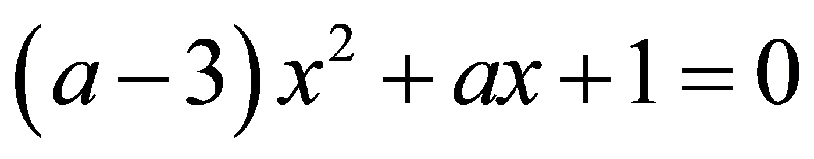
是一元一次方程的条件是 ．2．（24-25七年级下·四川内江·阶段练习）若
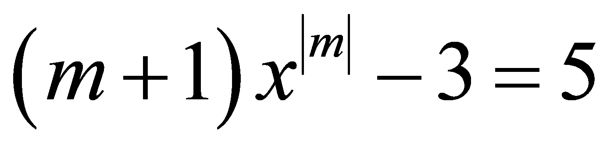
是关于 的一元一次方程，则
的一元一次方程，则 的值为 ．
的值为 ．3．（24-25七年级上·辽宁铁岭·期末）已知方程
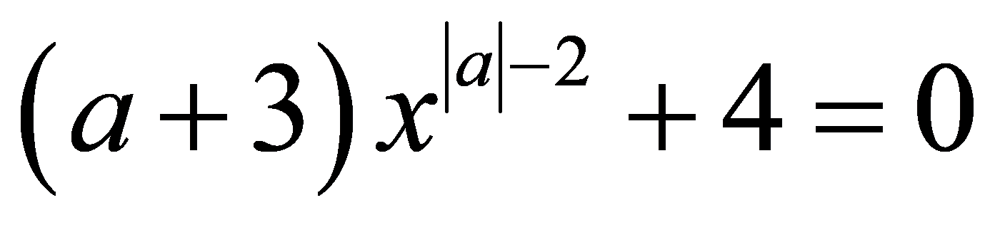
是关于x的一元一次方程，则 ．
．4．（24-25七年级上·江苏无锡·阶段练习）已知关于的方程
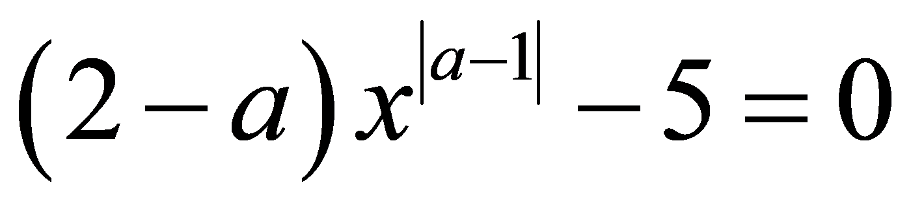
是一元一次方程，则 ．5．（25-26七年级上·全国·课后作业）已知关于的方程 是一元一次方程．
是一元一次方程．
(1)求的值．
(2)请判断 和
和 是否为方程的解．
是否为方程的解．
(3)求 的值．
的值．
题型二：利用一元一次方程的解求代数式的值
6．（24-25七年级下·湖南岳阳·开学考试）已知是关于x的一元一次方程 的解，则m的值为 ．
的解，则m的值为 ．
7．（24-25七年级上·重庆·期末）已知是关于x的方程
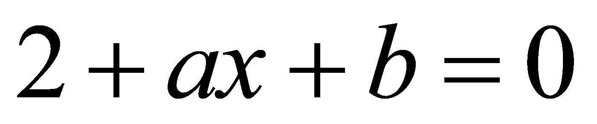
的解，则 ．
．8．（24-25六年级下·山东威海·期末）若 是关于的一元一次方程
是关于的一元一次方程 的解，则
的解，则
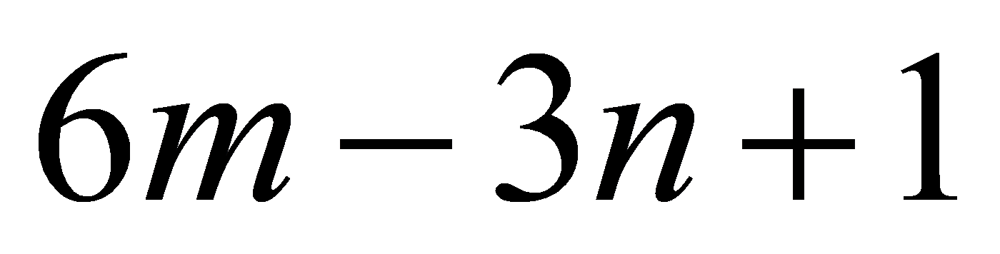
的值是 ．9．（24-25七年级上·江苏宿迁·期末）已知是关于的一元一次方程 的解，则代数式
的解，则代数式
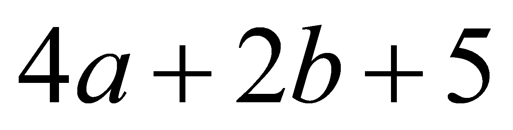
的值为 ．10．（24-25七年级下·福建泉州·期中）已知 是关于的方程
是关于的方程
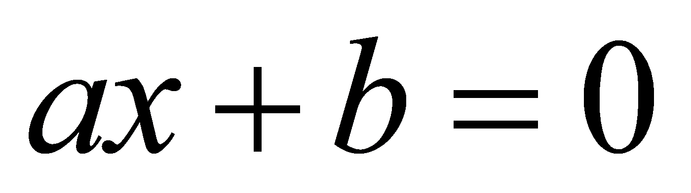
的解，求下列各式的值．(1) ；
；
(2)
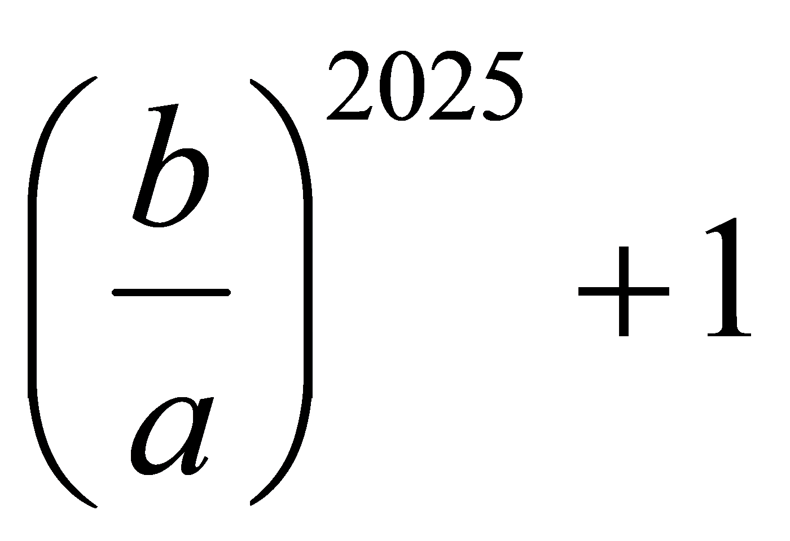
．题型三：利用一元一次方程的解相同求字母参数
11．（24-25七年级上·陕西咸阳·期末）若关于x的方程 的解与方程
的解与方程 的解相同，则a的值为 ．
的解相同，则a的值为 ．
12．（24-25七年级上·山东滨州·期末）若方程
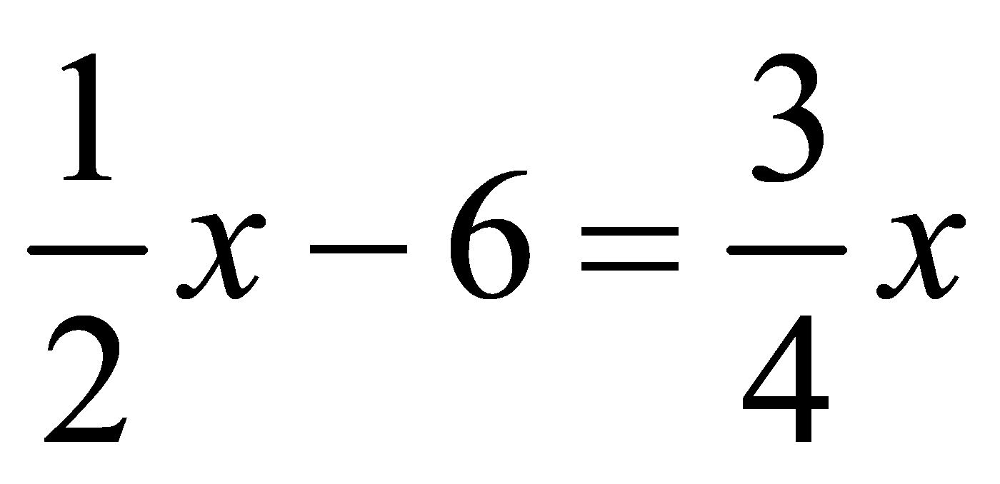
与关于的方程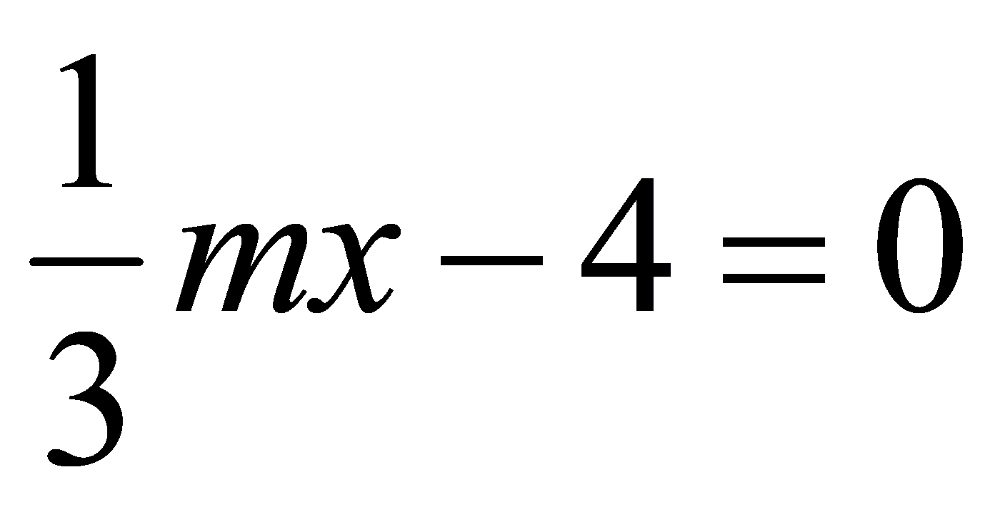
的解相同，则 ．
．13．（24-25七年级上·山东济南·阶段练习）已知关于的方程
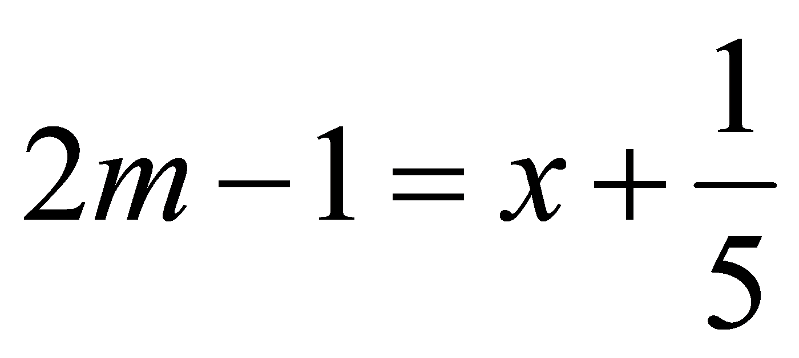
的解与 的解相同，则m的值为 ．
的解相同，则m的值为 ．14．（2024七年级上·全国·专题练习）（濮阳期末）已知方程 与关于
与关于 的方程
的方程 的解相同，则
的解相同，则 的值为
的值为
15．（24-25七年级下·山西晋城·期中）已知 是关于x的一元一次方程．
是关于x的一元一次方程．
(1)当m为何值时，该方程的解与方程 的解相同？
的解相同？
(2)当方程的解为正整数，且m为非负整数时，求m的值．
题型四：求一元一次方程含字母参数的方程的解
16．（23-24七年级上·江苏扬州·期中）已知关于 的一元一次方程
的一元一次方程 的解为
的解为 ，那么关于
，那么关于 的方程
的方程
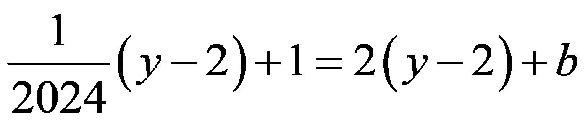
的解为
17.（23-24七年级上·湖北武汉·期末）如果关于 的方程
的方程 的解
的解
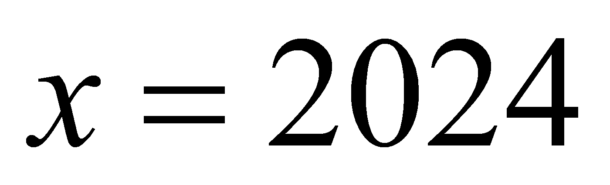
，则关于 的方程
的方程 的解
的解 ．
．18．（23-24七年级上·江苏扬州·期中）已知关于的一元一次方程
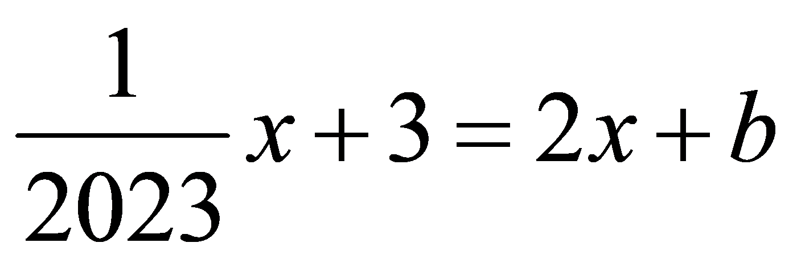
的解为 ，则关于的一元一次方程
，则关于的一元一次方程 的解为 ．
的解为 ．19．（23-24七年级上·浙江嘉兴·期末）已知 为实数，关于的方程
为实数，关于的方程
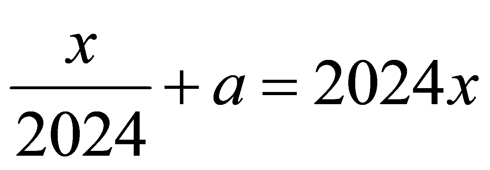
的解为 ，则关于的方程
，则关于的方程 的解为 ．
的解为 ．20．（23-24七年级上·江苏南通·期末）若关于的一元一次方程 的解为
的解为 ，则关于的一元一次方程
，则关于的一元一次方程 解为 ．
解为 ．
题型五：一元一次方程含字母参数的解为整数解问题
21．（24-25六年级上·上海·阶段练习）若关于x的一元一次方程
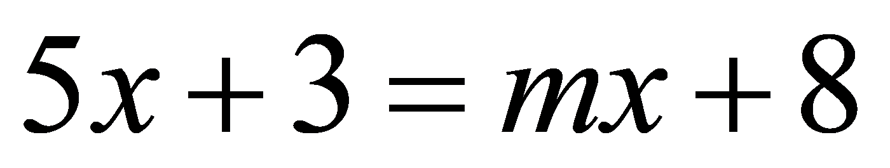
的解是正整数，则整数m的值为 ．22．（25-26七年级上·重庆·期中）已知 为整数，且关于的方程
为整数，且关于的方程 的解为正整数，则整数 的值为 ．
的解为正整数，则整数 的值为 ．
23．（2025七年级上·全国·专题练习）若关于x的一元一次方程 的解是正整数，则所有满足条件的整数a的和为 ．
的解是正整数，则所有满足条件的整数a的和为 ．
24．（24-25七年级上·四川成都·期末）已知关于x的一元一次方程
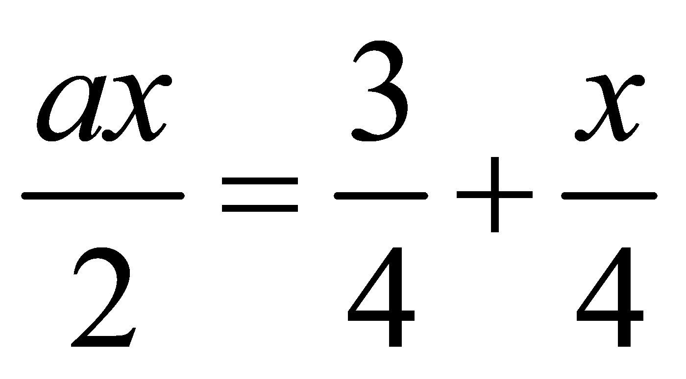
的解为正整数，且满足条件所有整数a的和为m；若点C是直线 上的一点，
上的一点， （m为常数），
（m为常数），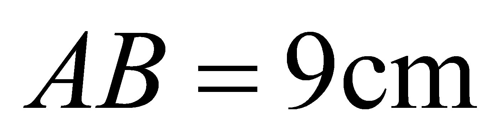
，则 的长为
的长为  ．
．25．（24-25七年级上·浙江金华·阶段练习）已知 是关于x的多项式，记为
是关于x的多项式，记为 ．我们规定：的导出多项式为
．我们规定：的导出多项式为
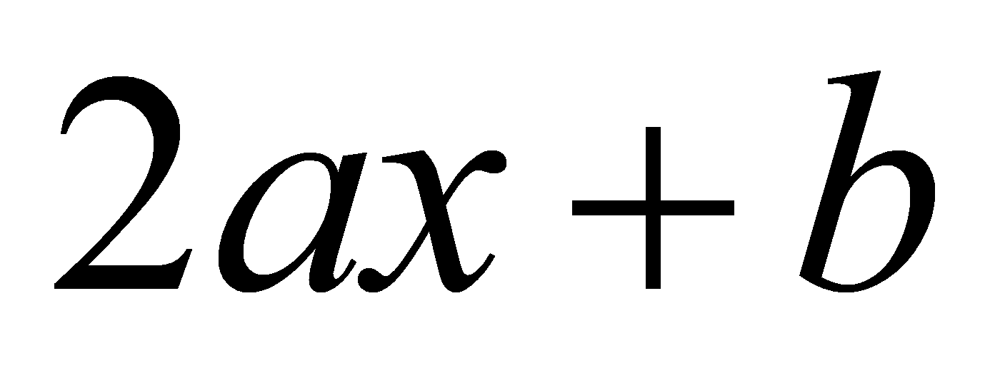
，记为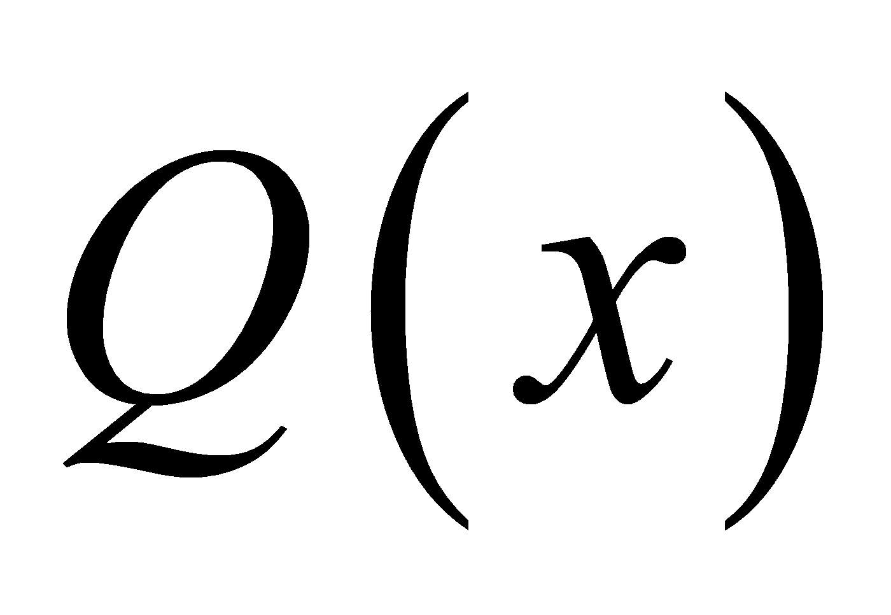
．例如：若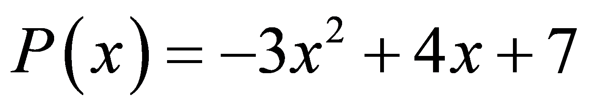
，则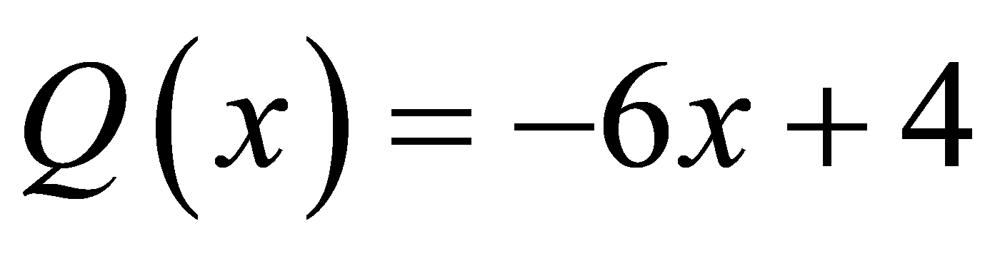
．若 是关于x的二次多项式，且关于x的方程
是关于x的二次多项式，且关于x的方程 的解为正整数，则所有符合要求整数m的值的和为 ．
的解为正整数，则所有符合要求整数m的值的和为 ．题型六：一元一次方程含字母参数的新定义型问题
26.（24-25七年级上·黑龙江哈尔滨·阶段练习）解一元一次方程时，发现这样一种特殊情况： 的解为
的解为 ，恰巧
，恰巧 ，我们将这种类型的方程做如下定义：如果一个方程
，我们将这种类型的方程做如下定义：如果一个方程
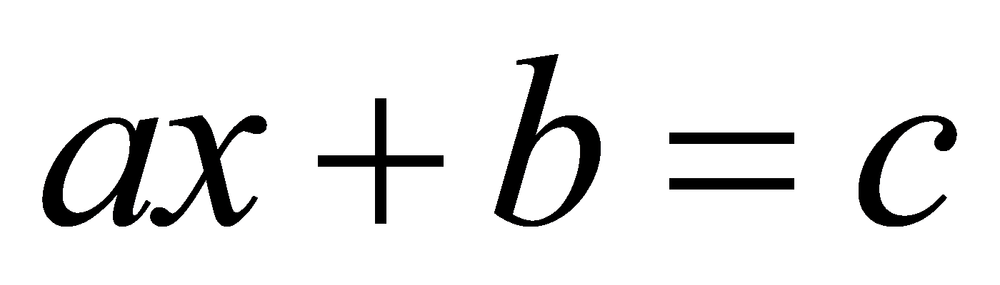
的解满足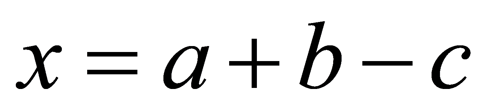
，则称它为“巧合方程”，请解决以下问题．(1)请判断方程 是否是巧合方程：______（直接写“是”或“不是”）；
是否是巧合方程：______（直接写“是”或“不是”）；
(2)已知方程 是巧合方程，请求出b的值；
是巧合方程，请求出b的值；
(3)若 和
和 都是巧合方程，请求出
都是巧合方程，请求出 的值．
的值．
27．（24-25七年级上·全国·单元测试）定义：如果两个一元一次方程的解互为相反数，我们就称这两个方程为“兄弟方程”．如方程 和
和 为“兄弟方程”．
为“兄弟方程”．
(1)若关于x的方程 与方程
与方程 是“兄弟方程”，求m的值；
是“兄弟方程”，求m的值；
(2)若两个“兄弟方程”的两个解的差为6，其中一个解为n，求n的值；
(3)若关于x的方程 和
和 是“兄弟方程”，求m的值．
是“兄弟方程”，求m的值．
28．（24-25七年级上·黑龙江哈尔滨·阶段练习）已知a、b为有理数，且 ，若关于x的一元一次方程
，若关于x的一元一次方程 的解为
的解为 ，则此方程为“合并式方程”．例如：
，则此方程为“合并式方程”．例如： ，
， ∴此方程为“合并式方程”，请根据上述定义解答下列问题：
∴此方程为“合并式方程”，请根据上述定义解答下列问题：
(1)一元一次方程 是否是“合并式方程”？并说明理由；
是否是“合并式方程”？并说明理由；
(2)若关于x的一元一次方程 是“合并式方程”，且它的解为
是“合并式方程”，且它的解为 ，求a、b的值．
，求a、b的值．
29．（23-24七年级下·浙江金华·开学考试）定义：如果两个一元一次方程的解之和为1，我们就称这两个方程为“美好方程”．例如：方程
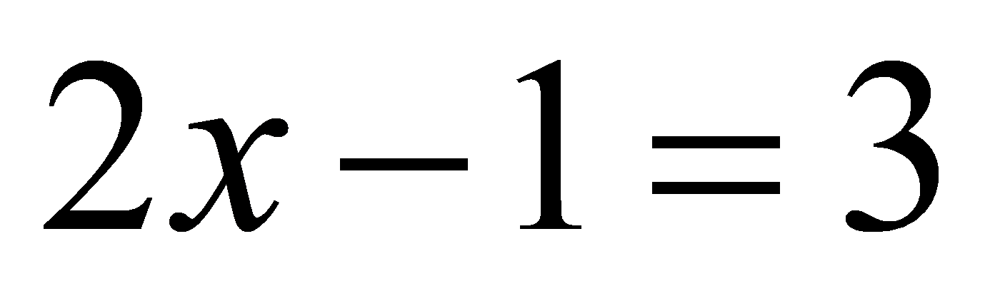
和 为“美好方程”．
为“美好方程”．(1)方程 与方程
与方程
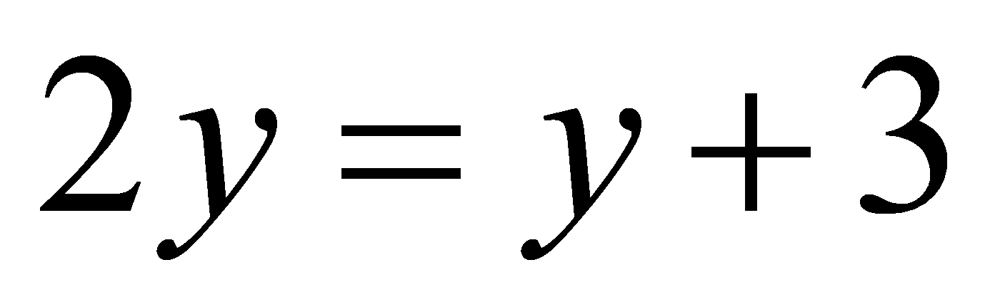
是“美好方程”吗？请说明理由；(2)若关于x的方程
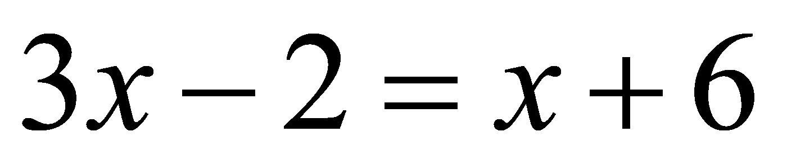
与方程 是“美好方程”，求m的值；
是“美好方程”，求m的值；(3)若关于x方程 与
与
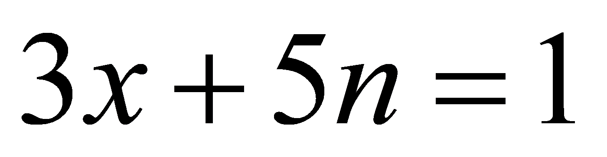
是“美好方程”，求n的值．30．（24-25七年级上·北京·阶段练习）观察下列两个等式： ，
， ，给出定义如下：我们称使等式
，给出定义如下：我们称使等式 成立的一对有理数a，b为“成达数对”，记为
成立的一对有理数a，b为“成达数对”，记为 ，如：数对
，如：数对 、
、 都是“成达数对”．
都是“成达数对”．
(1)数对
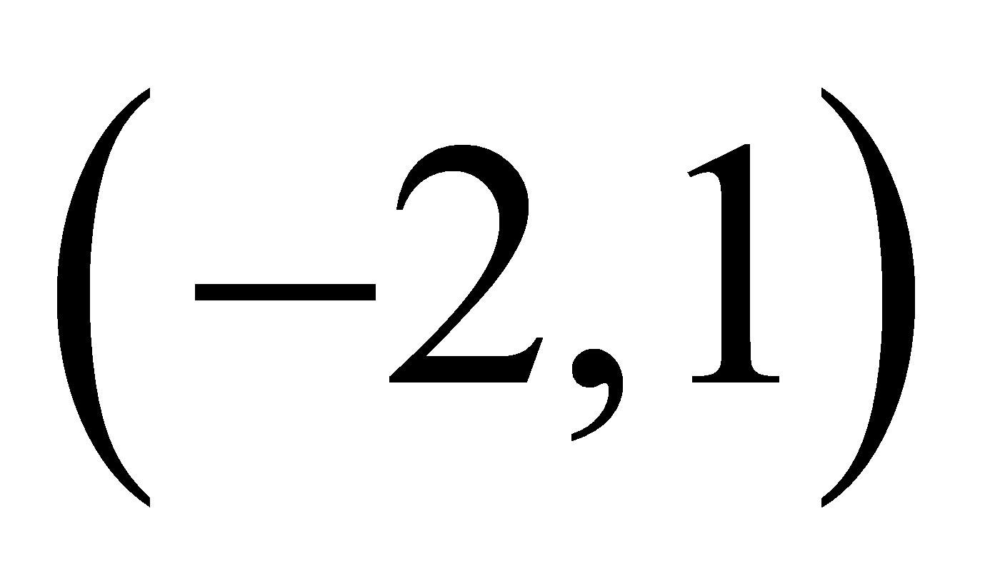
、 中是“成达数对”的是______；
中是“成达数对”的是______；(2)若 是“成达数对”，求a的值；
是“成达数对”，求a的值；
(3)若 是“成达数对”，则
是“成达数对”，则
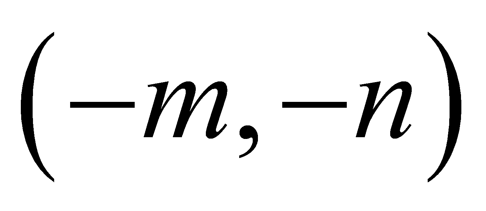
______“成达数对”（填“是”、“不是”或“不确定”）；(4)请再写出一对符合条件的“成达数对”．（不能与题目中已有的数对重复）